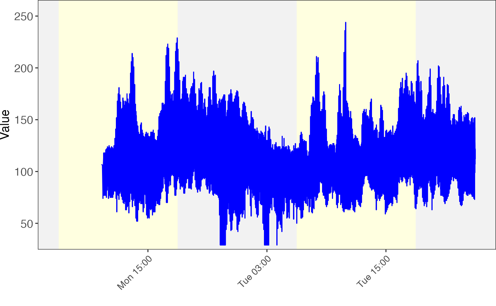
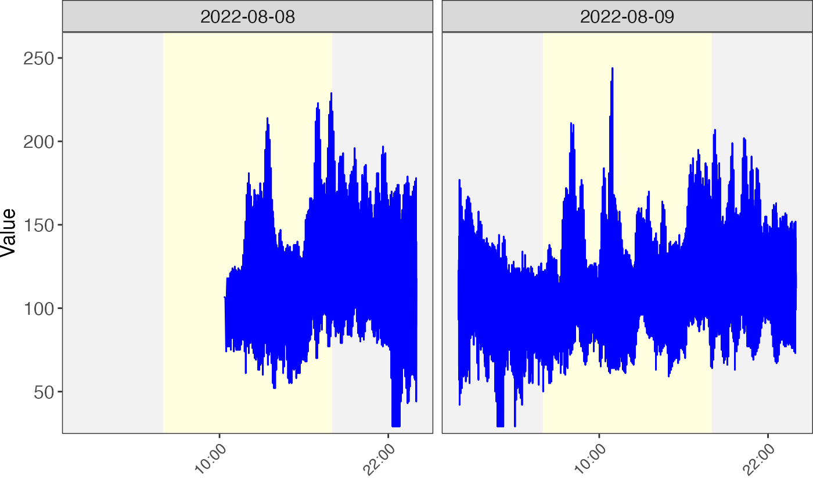
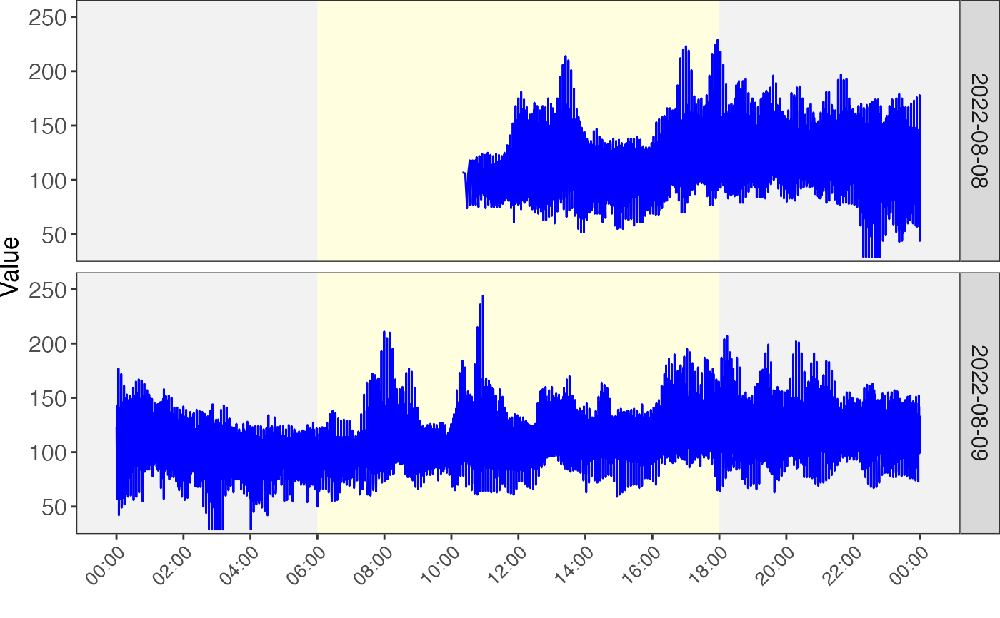

Draw time series plot
draw_time_plot(
x,
accurate_time,
variable_index,
color = "blue",
y_axis_name = "Value",
sun_rise_time = "6:00:00",
sun_set_time = "18:00:00",
time_gap = 12,
add_point = FALSE,
facet = FALSE,
facet_function = c("facet_grid", "facet_wrap"),
facet_grid_by = c("rows", "cols"),
facet_wrap_nrow,
facet_wrap_ncol,
...
)
# S3 method for numeric
draw_time_plot(
x,
accurate_time,
variable_index,
color = "blue",
y_axis_name = "Value",
sun_rise_time = "6:00:00",
sun_set_time = "18:00:00",
time_gap = 12,
add_point = FALSE,
facet = FALSE,
facet_function = c("facet_grid", "facet_wrap"),
facet_grid_by = c("rows", "cols"),
facet_wrap_nrow,
facet_wrap_ncol,
...
)
# S3 method for wearable_dataset
draw_time_plot(
x,
accurate_time,
variable_index,
color = "blue",
y_axis_name = "Value",
sun_rise_time = "6:00:00",
sun_set_time = "18:00:00",
time_gap = 12,
add_point = FALSE,
facet = FALSE,
facet_function = c("facet_grid", "facet_wrap"),
facet_grid_by = c("rows", "cols"),
facet_wrap_nrow,
facet_wrap_ncol,
...
)
# S3 method for default
draw_time_plot(x, ...)A numeric vector or wearable_dataset object.
Accurate time
index of variable
color
y_axis_name
should be 24 hour format, default "6:00:00"
should be 24 hour format, default "18:00:00"
time gap for x axis text.
add point or not.
facet or not.
facet function, facet_grid or facet_wrap
facet_grid, rows or cols
nrow for facet_wrap
ncol for facet_wrap,
othter arguments
A ggplot2 object.
data("expression_data", package = "wearabledataset")
data("sample_info", package = "wearabledataset")
data("variable_info", package = "wearabledataset")
object <-
create_wearable_dataset(expression_data, sample_info, variable_info)
object <- object %>% mutate2sample(what = "date")
unique(object@sample_info$date)
#> [1] "2022-08-08" "2022-08-09" "2022-08-10" "2022-08-11" "2022-08-12"
#> [6] "2022-08-13" "2022-08-14" "2022-08-15" "2022-08-16" "2022-08-17"
#> [11] "2022-08-18"
object <-
object %>% activate_wearable_dataset(what = "sample_info") %>%
filter(date %in% c("2022-08-08", "2022-08-09"))
expression_data <- extract_expression_data(object)
sample_info <- extract_sample_info(object)
x = as.numeric(expression_data[1,])
accurate_time = sample_info$accurate_time
draw_time_plot(x = x, accurate_time = accurate_time)

draw_time_plot(x = object, variable_index = 1,
facet = TRUE,
facet_function = "facet_wrap")

draw_time_plot(x = object,
variable_index = 1,
facet = TRUE,
facet_function = "facet_grid",
facet_grid_by = "rows", time_gap = 2)
